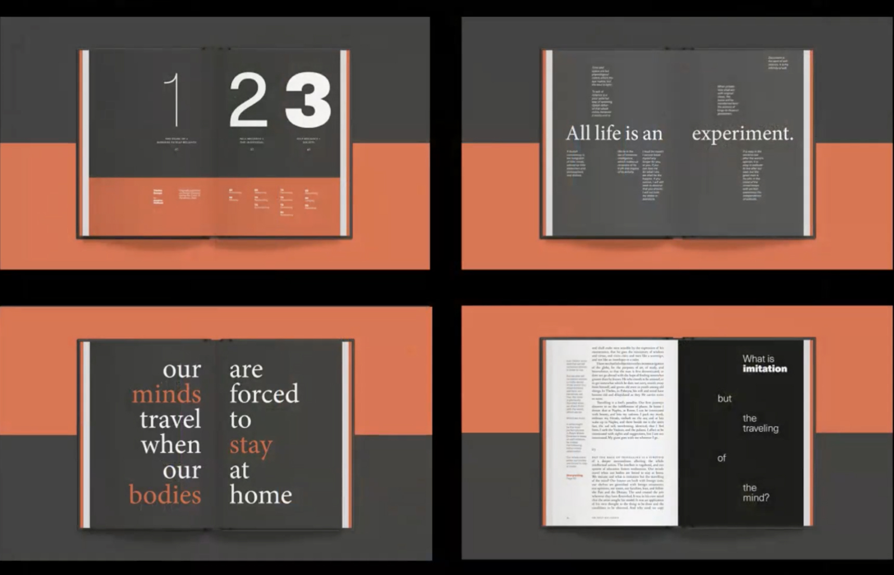
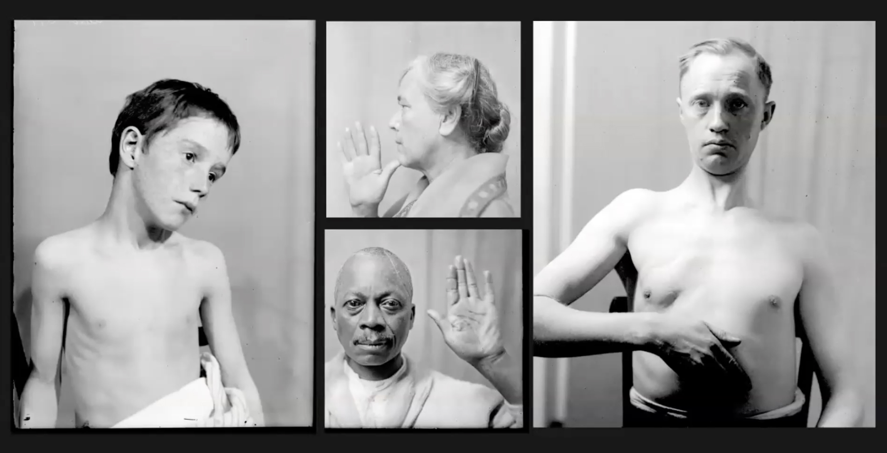

“Looking at the screen as a lens, as a stage, as a platform, as a filter, as a form of entertainment and a platform for communication.”
“Put together by people who didn’t have computers and algorithm to actually understand the information permutes, changes, shifts, and grows”
“Think about design not in terms of typogrpahy,
communication but in terms of forms of expression
that are evocations of who we are as people”

“Studio practice is a much individual pursue.It’s a
human pursue. It’s an important thing to learn.”
“Look at humanity through our faces. The face you have is what you are given..”
“Look. Look. Look. That is what observation are all about. That’s what designers and artists do.”
“The most important thing for young makers, whether you are UI/UX designers, painters, or poet, it is the idea that you interogate your assumptions, you push back, you think broadly, you feel deeply, you keep a sketch book, and you keep on moving.”
“When you do research, you learned not what these people tell us but what you learn, what your eyes tell you. Start to pay attention to pattern recognition. What is it that your eyes are drawn to. What is it that you are thinking about.”
“Photography is the way that expresses the aging aspect of stories.”

“We all look the same on the inside, its what we are on the inside and what we do with it that matters.”
“Every single detail is something that you are looking at.”
“What is beauty? Beauty, facial beauty is at the core of so much of what’s wrong about us .”